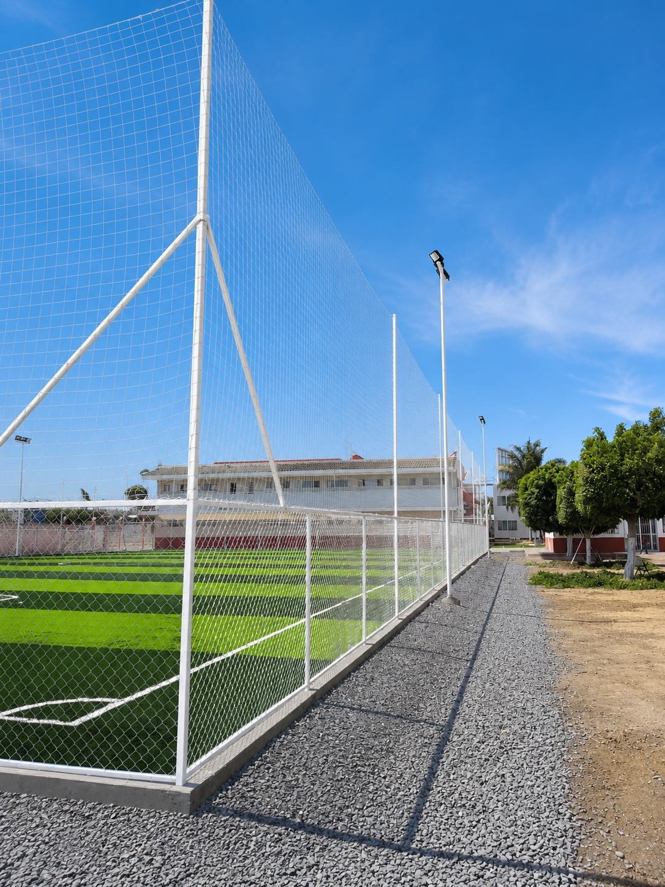
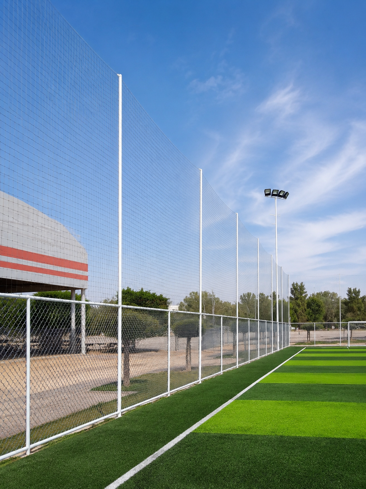
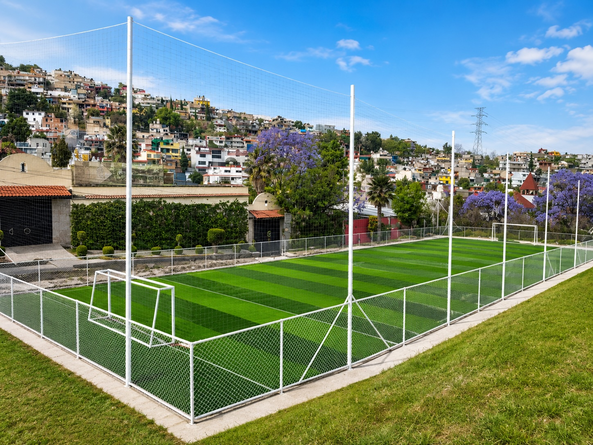
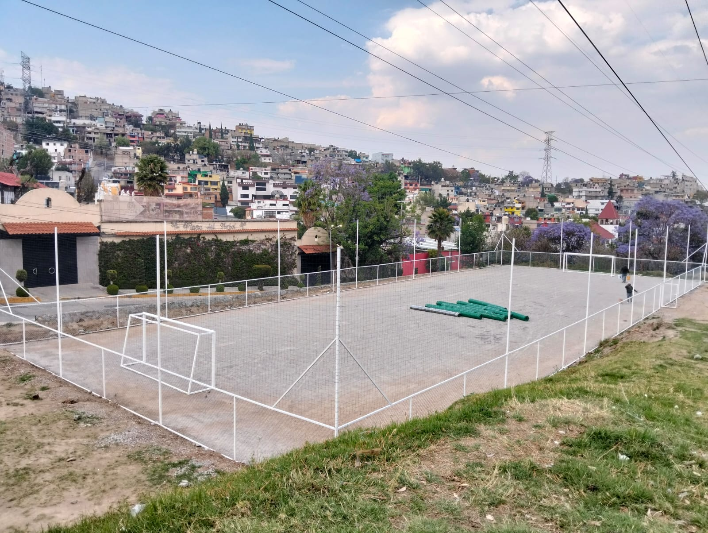
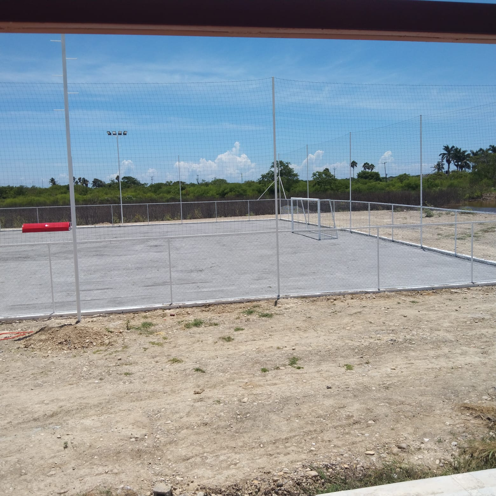

Perímetro claro
Delimita el juego
La malla baja marca dónde empieza y termina la cancha. Se ve ordenada, segura y lista para operar desde el primer vistazo.
Delimita el área, eleva la percepción de tu cancha y evita que los jugadores pierdan tiempo yendo por balones. Integramos malla ciclónica, postes para red perimetral atrapabalones, porterías y accesorios para que la cancha se vea como un verdadero complejo deportivo.


La malla ciclónica delimita el perímetro y ordena visualmente la cancha. Arriba, los postes de 4 metros sostienen la red perimetral que funciona como atrapabalones. El resultado se siente más profesional, más seguro visualmente y más completo para escuelas, universidades, clubes, fraccionamientos y complejos deportivos.
Delimita el área, protege el perímetro y hace que el espacio se vea terminado.
Después de los 2 m de malla, los postes largueros sujetan la red superior atrapabalones.
Ayuda a mantener el balón dentro de la zona de juego y mejora la experiencia del usuario.
El usuario no compra sólo pasto. Compra la sensación de jugar en una cancha seria: perímetro definido, porterías correctas, red alta, bancas, luz y gradas. Eso cambia la percepción del proyecto.
La malla baja marca dónde empieza y termina la cancha. Se ve ordenada, segura y lista para operar desde el primer vistazo.

Los postes altos y la red atrapabalones ayudan a que el balón no salga tanto. Menos interrupciones, más juego y mejor experiencia.

Cuando la cancha ya tiene perímetro, porterías y red alta, deja de verse como terreno con pasto y se siente como complejo deportivo.
Fotos claras para vender: malla ciclónica, postes para red, red perimetral, porterías y cancha lista para operar.



Funciona para fútbol 5, fútbol 7, fútbol rápido y fútbol 11. Se adapta al tamaño del proyecto y al nivel de imagen que quieres lograr.
Envíanos medidas, ciudad y fotos del área. Te ayudamos a cotizar malla ciclónica, postes, red perimetral, porterías y accesorios.
La malla ciclónica se vende mejor cuando el cliente ve la cancha completa: gradas, bancas, porterías, red perimetral, alumbrado y marcador. Es el paquete visual que convierte el proyecto en mini estadio.
 01
01Gradas metálicas con techo curvo para escuelas, clubes y torneos. Le dan presencia al proyecto y ordenan la zona de espectadores.
 02
02Bancas techadas para local, visitante y árbitros. Hacen que la cancha se vea más seria y lista para operación deportiva.
 03
03Porterías de aluminio reforzado para fútbol 5, fútbol 7 y soccer. El marco correcto cambia la percepción de toda la cancha.
 04
04Delimita el área, protege el perímetro y hace que la cancha se entienda como un espacio deportivo terminado.
 05
05Reflectores LED y postes para iluminación uniforme. Permite operar de noche y aumentar las horas rentables de la cancha.
 06
06Marcadores para tiempo y puntuación. Elevan la experiencia en torneos, ligas internas y partidos con público.
Para el sistema mini estadio usamos como referencia malla ciclónica de 2 metros de altura para delimitar el perímetro de la cancha.
Después de los 2 metros de malla se colocan postes largueros de 4 metros que sujetan la red perimetral atrapabalones.
Se puede cotizar con porterías oficiales con red para fútbol 5, fútbol 7, fútbol rápido o fútbol 11, según el proyecto.
Sí. Es una solución muy útil para escuelas, universidades, clubes, fraccionamientos, municipios y complejos deportivos.
Sí. Puedes cotizar sólo malla ciclónica o un sistema más completo con postes, red perimetral, porterías, bancas, alumbrado y gradas.
Medidas de la cancha, ciudad, fotos del área y si buscas sólo perímetro o sistema mini estadio completo.